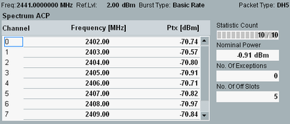
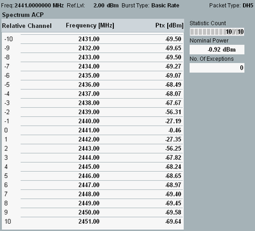

Spectrum ACP Results (BR)
The "Spectrum ACP" table view for BR packets shows the adjacent channel power results.
The frequency band defined for Bluetooth devices is the unlicensed 2.4 GHz "Industrial, Scientific and Medical" (ISM) frequency band.
There are two possible "Spectrum ACP" table views. The view depends on the ACP measurement mode:
- ACP 79 channels (Bluetooth frequencies only) or
- ACP +/-10 channels (any frequencies)

Spectrum ACP 79 channels results (BR)

Spectrum ACP +/-10 channels results (BR)
The view contains the following results:
- "(Relative) Channel": Bluetooth regulatory or relative channel number.
With "ACP +/-10 Channels" mode, the channel number corresponds to the frequency spacing in MHz relative to the center channel. The center channel is channel no. 0, defined by the selected RF frequency.
With "ACP 79 Channels", the channel number corresponds to the channels within the Bluetooth regulatory range (channels 0 to 78, corresponding to RF frequencies 2402 MHz, 2403 MHz ... 2479 MHz). The "ACP 79 Channels" is not relevant for LE coded PHY.
See "ACP Measurement Mode". - "Frequency" in MHz: Center frequency of the (relative) channels.
- "Ptx" in dBm: ACP results for all channels. The results correspond to the integrated powers that the Bluetooth device transmits in the Bluetooth channels. According to the test specification for Bluetooth wireless technology, the ACP is the sum of the maximum powers PTXi at 10 distinct, equidistant frequencies fi distributed across the channel width:
PTX(f) = ∑(PTXi), i = 1 ... 10
See also Figure "ACP calculation for EDR packets". - "No. of Exceptions": Number of channels in which the recorded PTX value is greater than "ACP > Basic Rate > Exceptions PTX" limit. The center channel (defined by the selected RF channel or frequency) and 2 channels, each, on either side of this center channel are excluded from this measurement.
See also "Spectrum Requirements". - "Nominal Power": Average burst power during the carrier-on state, measured in the "Basic Rate Filter Bandwidth".
The measurement procedure of the R&S CMW is faster than the procedure described in the test specification for Bluetooth wireless technology, but it provides equivalent results. See also "Statistical settings for ACP measurements" in "ACP and Multi-Shot Measurements".
Read "Spectrum ACP Measurement" to measure the ACP in line with the test specification for Bluetooth wireless technology. |
For query of the results via remote control, see "Spectrum Measurement Results (BR)".